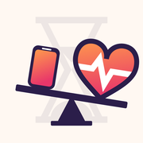
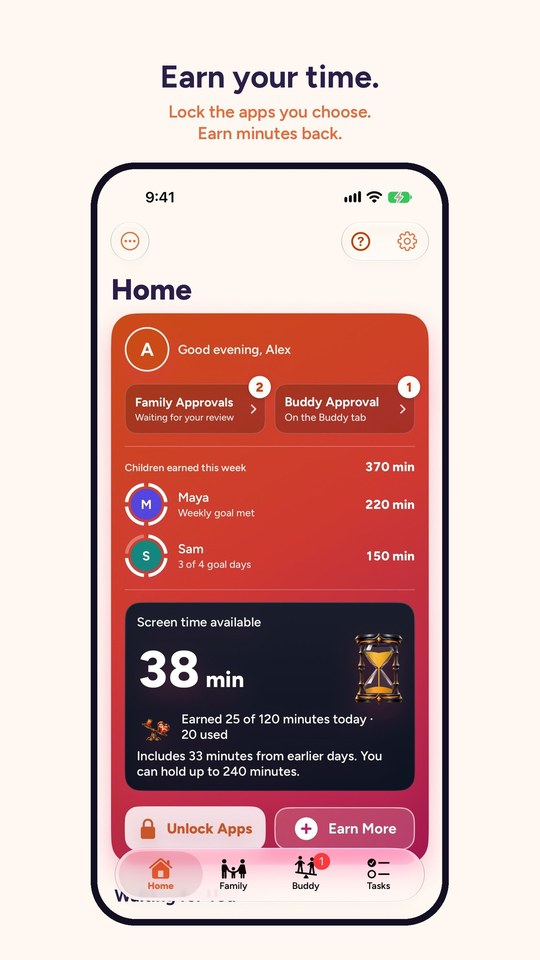

Press and Creators
The short version
CounterWait is an iPhone app that locks the apps you choose until you earn time for them. Push ups and squats the camera counts, steps from Apple Health, or a chore someone approves each turn into minutes. Spend the minutes and the apps open, then lock again when the time runs out. It's for parents, for adults cutting back their own screen time, and for two people keeping each other honest. It's made by one family in North Carolina, not a tech company, and it's in public beta on iPhone now.
What it is
- Earning, not only blocking. Locked apps open with minutes earned from exercise and tasks, so "Can I have more time?" has an answer: go earn it.
- A grown-up in the loop. A parent or guardian approves a child's tasks from their own iPhone. Adults can ask a buddy to approve theirs.
- Built on Apple's Screen Time. iPhone, iOS 17 or later. Free to use, with an optional Plus. See Questions for prices.
The privacy facts
- The camera counts reps on the iPhone. It never records or sends video.
- Workouts send counts only.
- No ads and no tracking SDKs.
- No servers of our own. Shared data moves through Apple's iCloud.
The full details are in the Privacy Policy.
Files to download
Use them as they are. Please don't change the icon's colors or shape.
 App icon, vectorSVG, 1024 x 1024, any sizeDownload
App icon, vectorSVG, 1024 x 1024, any sizeDownload
App icon, smallPNG, 180 x 180Download- Header imagePNG, 1200 x 630: the phone and the heart on a seesawDownload

Home screenJPG, 540 x 960, with a sample familyDownload- Demo videoMP4, 27 seconds, 720 x 1280, with sound. Also on its own page.Download


Need something that isn't here, like screenshots at full size or clips without sound? Email support@steppingstonegroup.net.
For creators
If we gave you something
If CounterWait gave you a free code, or anything else, say so. This line works:
CounterWait gave me a free code.
The FTC asks that you say it out loud in the video and put it in the caption, not only in a link or a hashtag pile. Then say what you actually think.
Film it safely
- Use nicknames. The app shows whatever names were typed in. "Child 1" works fine on camera.
- Ask your child first. Before you film them, and again before you post.
- Turn on Do Not Disturb. So messages don't pop up in the shot.
- Screen-record with Control Center. CounterWait never records anything itself. During a camera workout the screen shows the camera, so whoever is in front of it is in the recording.
- Turn Rep Sounds off if you'll add music. The ding plays even on silent. The Rep Sounds switch is on the workout screen.
- Stand the phone where the app says. For push ups and planks: on its side, leaning against something at floor level, about 8 feet (2.5 m) away and off to one side, so it sees you side-on. For squats: leaning against something in front of you, about 6 feet (2 m) away, head to feet in the picture. Straight in front of your head doesn't count push ups.
Sharing results
The weekly goal badge reports what was done ("Active 5 of 7 days"), with no names on it. It's best sent to people you choose, like a buddy or family in Messages. On a child's iPhone it saves to Photos instead of sharing.
CounterWait isn't on social media, on purpose, so there's no account to tag. Link to counterwait.app.
Contact
Questions or interviews: support@steppingstonegroup.net. We usually reply within two business days.